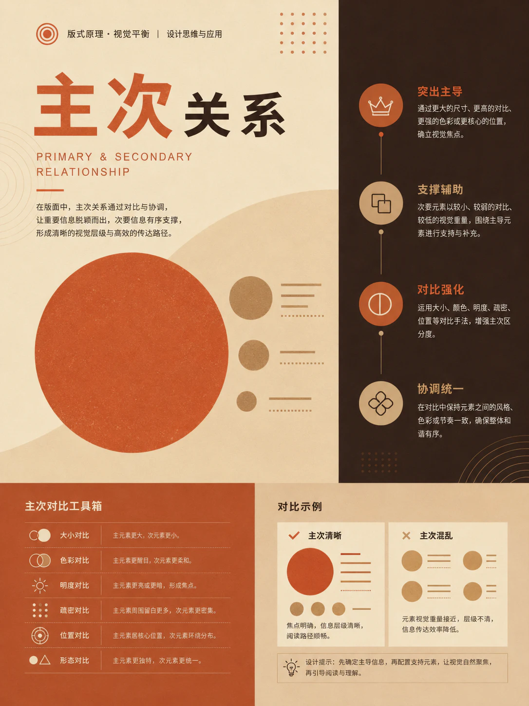

主次关系
在版面中，主次关系通过对比与协调，让重要信息脱颖而出，次要信息有序支撑，形成清晰的视觉层级与高效的传达路径。
0/4 · 主次混乱
横拖画布推拉主次势差 · 点模块「立为主角」或卸除标红抢戏 · 方向键微调 · Space 视线验径
0/4 · 主次混乱 — 四块重量拉平，看不出主角
主次对比工具箱
点击每行档位，实时重塑上方画布-
大小对比
主元素更大，次元素更小。
-
色彩对比
主元素更醒目，次元素更柔和。
-
明度对比
主元素更亮或更暗，形成焦点。
-
疏密对比
主元素周围留白更多，次元素更密集。
-
位置对比
主元素居核心位置，次元素环绕分布。
-
形态对比
主元素更独特，次元素更统一。
对比示例
当前舞台偏向「× 主次混乱」
合法多解
双向试错
设计提示：先确定主导信息，再配置支持元素，让视觉自然聚焦，再引导阅读与理解。
待调提示：向右横拖画布拉大主次势差，并收束异色。
实绘顺位 主圆 → 一级 → 二级 → 末级
01
WHY ONE MUST LEAD
为什么不能人人当主角
打开一张排满重要通知的海报，最容易犯的错不是「做得不够醒目」，而是把每条信息都做得同样醒目。正如原海报右下角写的那句判断：「元素视觉重量接近，层级不清，信息传达效率降低。」
人类视觉系统在看清字面含义之前，会先在几百毫秒内并行扫描整个视野里的尺度、色相、明度与留白差。如果版面上只有唯一一个元素在这些维度上拉开了明显差距，它就会自动从背景中「跳出」，观众几乎不费脑力就能落准第一眼。
反过来，只要有三四个模块同时套上高饱和底色或同样粗大的外形，并行跳出立刻失效——眼睛只能退回到低效的「逐格扫描」，像在人群里挨个核对脸孔。关于如何把多级信息进一步排成从第 1 眼到第 5 眼的完整阅读阶梯，见 095 视觉层级原则；这里先亲手测一测 0.6 秒内的真实寻靶差距。
单主跳出模式：1 枚主角靠尺寸与窑红脱颖而出，其余 11 格安静衬托。
点「闪现 0.6 秒」开始实测，体验「一瞥即中」和「逐格苦找」的体感落差。
02
SIX LEVERS OF WEIGHT
视觉重量的六把杠杆
原海报左下角的「主次对比工具箱」列出了确立主次的六把杠杆：大小、色彩、明度、疏密、位置、形态。这六把杠杆各有专章深入展开——尺度差见 099 尺度对比原则，明暗差见 100 明暗对比原则，色彩差见 101 色彩对比原则，形态差见 102 形状对比原则，借助留白将主角独立出来的手法见 106 隔离原则，此外材质反差与动静反差也可在 103 质感对比原则 与 104 动静对比原则 中继续延伸。
但在真实排版里，最关键的经验值（非绝对铁律）是「做减法而不是六门齐发」：把有限的对比预算集中在 2 到 3 把主杠杆上，让其余维度保持统一克制，往往比把六项全部拉到顶格更高级也更耐看。在下面这套 6 枚陶土筹码预算器里，试着把默认「撒胡椒面」的 1–1–1–1–1–1 重新归拢。
剩余筹码 0 / 6
03
CONTRAST MEETS HARMONY
对比过火，协调就散了
很多人只记住了主次关系的前半句「拉大对比」，却漏掉了原海报第 4 条最难的那句——「协调统一：在对比中保持元素之间的风格、色彩或节奏一致，确保整体和谐有序。」
如果为了突出主角，把标题做成复古手写、辅文换成冷蓝霓虹、图标贴成尖刺多边形，主次确实分出来了，但整张画面也裂成了三张毫不相干的剪贴画。成熟的主次关系像一个乐团：领奏音量更高、音色更亮，但伴奏和它共享同一套调性与节拍。
在平面设计里，维持「对比中的协调」最稳的三条暗桥是：同色族收束（例如 096 海报用窑红配沙金与深焙咖，同属暖土色系）、同字族贯穿，以及让退居次位的元素共享同一条隐形基准轴。拖动旁边二维相图里的坐标点，或者点亮三条暗桥，观察失协拼贴如何一步步收拢进「高对比 × 高协调」甜点区。
04
WHERE IT COMES FROM
从宋画宾主到认知实验
「主次关系」并非现代软件发明的排版技巧。近一千年里，中国山水画论、现代艺术构图教育、格式塔知觉心理学和视觉注意实验，从四条截然不同的路径指向了同一条规律。
06
QUICK CHECK
挑出主次最稳的一版
07
ORIGINAL POSTER
原海报与同族索引

本页核心清单
「在版面中，主次关系通过对比与协调，让重要信息脱颖而出，次要信息有序支撑，形成清晰的视觉层级与高效的传达路径。」
同小类串联：层级、比例与对比
主次关系是连接层级排序与单一对比手法的枢纽，同属本类的其他专题各自展开：
- 095 视觉层级原则 — 把多组信息排成 ①→②→③ 顺位阶梯
- 097 平衡原则 — 让轻重不等的元素在画面两侧稳住力矩
- 098 比例原则 — 用恰当的数理尺幅关系组织局部与整体
- 099 尺度对比原则 — 专攻极端大与小的戏剧张力
- 100 明暗对比原则 — 借黑、白、灰光影反差塑造焦点
- 101 色彩对比原则 — 运用色相、冷暖与纯度反差抢占视线
- 102 形状对比原则 — 以曲直、方圆的轮廓差异制造跳脱
- 103 质感对比原则 — 通过粗粝与光滑的材质触感拉开层次
- 104 动静对比原则 — 以斜势流动衬托沉稳静止的焦点
- 105 并置原则 — 让同等分量的元素并排对话、互生语义
- 106 隔离原则 — 借大面积留白把单一对象彻底独立出来